Welcome to Satoshi Ikehata's Home Page
| Satoshi Ikehata, PhD |
| Associate Proffesor in National Institute of Informatics (Since 2017) |
| Concurrent affiliations: Informatics Program, Graduate Institute for Advanced Studies, SOKENDAI Department of Information & Communication Engineering, Graduate School of Information Science and Technology, The University of Tokyo |
| Senior Researcher at DensoIT Lab working in Recognition, Control and Learning Algoritym Laboratory in Tokyo Tech (Since 2023) |
| Address: 2-1-2 Hitotsubashi, Chiyoda-ku, Tokyo 101-8430 |
| E-mail: sikehata@nii.ac.jp |
Opportunity
Ph.D. Position Opening (SOKENDAI)
I am currently looking for talented Ph.D students (both from Japan and other countries) at SOKENDAI.
Opportunity
Ph.D. Position Opening (University of Tokyo)
I have started to accept Master/Doctor students from Graduate School of University of Tokyo (IST/Information & Communication Engineering).
Internship
2026 1st Call of NII International Internship Program (Master/Ph.D) (closed)
For applicants interested in my topic, 3D Computer Vision (K00501: 3D Computer Vision, 3D Computer Graphics), please submit this Google Form. The program mainly targets universities/institutions with an MoU with NII, but a limited number of non-MoU applicants can also be accepted. IMPORTANT NOTE: At this time, I will accept at most three students. If you have strong research ability and motivation, please feel free to apply. I do not place much emphasis on prior knowledge in my specific field. Due to the large number of applications, I cannot offer interviews to all applicants, so I will contact only the candidates who pass the initial screening to schedule an interview. Note: Although the application deadline for NII is April 10th (JST), applicants interested in my topic must fill this Google Form by March 27th (Fri), JST.
About me
- From 2020 to 2025, I was Visiting Researcher at Aizawa-Yamakata-Matsui Lab in UTokyo (Since 2020).
- From June 2014 to November 2016, I was a post-doc researcher in Washington University in St. Louis and worked with Dr. Yasutaka Furukawa.
- I got my Ph. D in 2014 and MS in 2011 in University of tokyo under the supervision of Prof. Kiyoharu Aizawa.
- I got my BA of Psychology from the University of Tokyo in 2009 under the supervision of Prof. Takao Sato.
- I worked for Visual Computing Group at Microsoft Research Asia as a visiting student in 2011, supervised by Dr. Yasuyuki Matsushita.
Research Interests
3D Computer Vision, Deep Learning Algorithms, Multi Sensor/Modality Fusion, Human Cognition and Perception
Selected Papers
Full publication list is available at researchmap.| CapFrame: Text-Instructed Viewpoint Grounding in 3D Gaussian Scenes via Geometric Pseudo Labels. Jirong Li, Satoshi Ikehata, Shuhei Kurita, Ikuro Sato. In proceedings of European Conference on Computer Vision (ECCV), September 2026. |
|||||||||||||||||||||||||||||||||||||||||||
| Retrieving and Refining Winning Noise Tickets for Diffusion-Based Motion Generation. Sakuya Ota, Qing Yu, Kent Fujiwara, Satoshi Ikehata, Ikuro Sato. In proceedings of European Conference on Computer Vision (ECCV), September 2026. |
|||||||||||||||||||||||||||||||||||||||||||
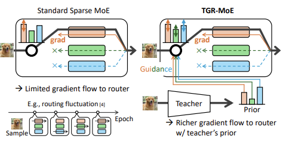 |
Teacher-Guided Routing for Sparse Vision Mixture-of-Experts. Masahiro Kada, Ryota Yoshihashi, Satoshi Ikehata, Rei Kawakami, Ikuro Sato. In proceedings of IEEE/CVF Conference on Computer Vision and Pattern Recognition (CVPR), June 2026. |
||||||||||||||||||||||||||||||||||||||||||
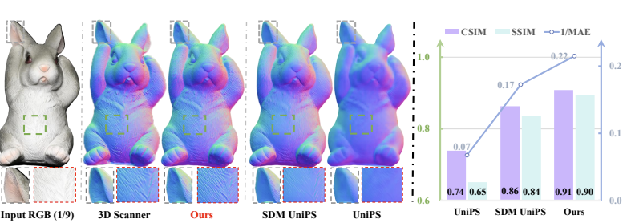 |
Light of Normals: Unified Feature Representation for Universal Photometric Stereo. Hong Li, Houyuan Chen, Chongjie Ye, Zhaoxi Chen, Bohan Li, Shaocong Xu, Xianda Guo, Xuhui Liu, Yikai Wang, Baochang Zhang et al. International Conference on Learning Representations (ICLR), April 2026. |
||||||||||||||||||||||||||||||||||||||||||
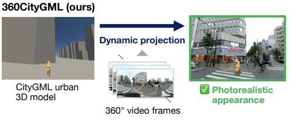 |
360CityGML: Realistic and Interactive Urban Visualization System Integrating CityGML Model and 360° Videos. Tatsuro Banno, Mizuki Takenawa, Leslie Wöhler, Satoshi Ikehata, Kiyoharu Aizawa. IEEE Transactions on Visualization and Computer Graphics, 32(2): 2420-2426, 2026. |
||||||||||||||||||||||||||||||||||||||||||
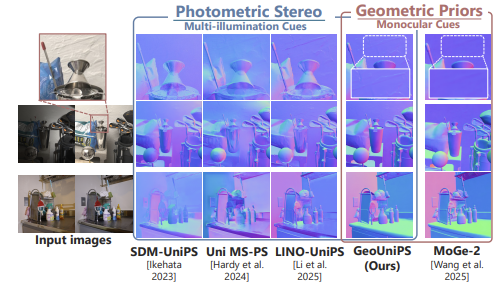 |
Geometry Meets Light: Leveraging Geometric Priors for Universal Photometric Stereo under Limited Multi-Illumination Cues. King-Man Tam, Satoshi Ikehata, Yuta Asano, Zhaoyi An, Rei Kawakami. In proceedings of Annual AAAI Conference on Artificial Intelligence (AAAI, accepted as an oral presentation), January 2026. |
||||||||||||||||||||||||||||||||||||||||||
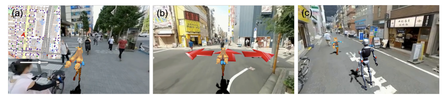 |
Building and Evaluating a Realistic Virtual World for Large Scale Urban Exploration from 360° Videos. Mizuki Takenawa, Naoki Sugimoto, Leslie Wöhler, Satoshi Ikehata, Kiyoharu Aizawa. Multimedia Tools and Applications (preprint), December 2025. |
||||||||||||||||||||||||||||||||||||||||||
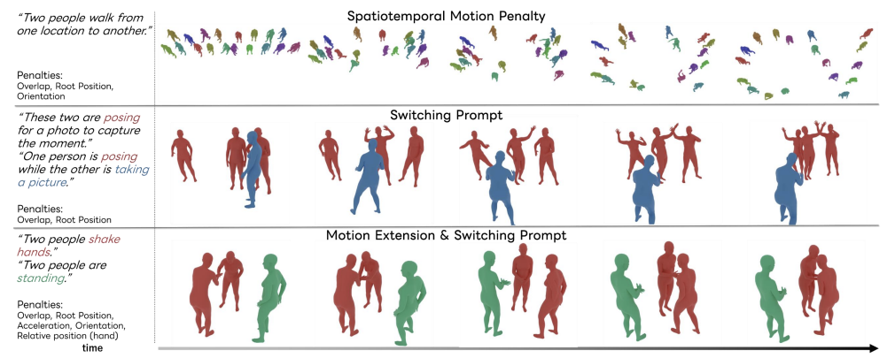 |
PINO: Person-Interaction Noise Optimization for Long-Duration and Customizable Motion Generation of Arbitrary-Sized Groups. Sakuya Ota, Qing Yu, Kent Fujiwara, Satoshi Ikehata, Ikuro Sato. In proceedings of CVF/IEEE International Conference of Computer Vision (ICCV), 2025. |
||||||||||||||||||||||||||||||||||||||||||
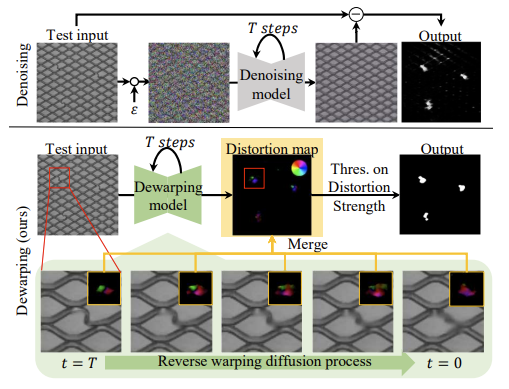 |
Measuring Distortion Strength With Dewarping Diffusion Models in Anomaly Detection. Akira Uchida, Satoshi Ikehata, Yuichi Yoshida, Ikuro Sato. In proceedings of IEEE International Conference on Image Processing (ICIP), 2025. |
||||||||||||||||||||||||||||||||||||||||||
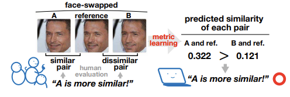 |
PREFACE: Metric Learning in Perceptual Facial Similarity fo Encanced Face Anomaization. Haruka Kumagai, Leslie Wöhler, Satoshi Ikehata, Kiyoharu Aizawa. In proceedings of IEEE International Conference on Image Processing (ICIP), 2025. |
||||||||||||||||||||||||||||||||||||||||||
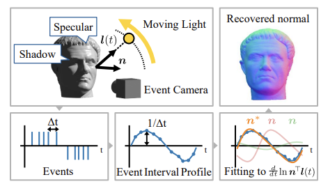 |
PS-EIP: Robust Photometric Stereo Based on Event Interval Profile. Kazuma Kitazawa, Takahito Aoto, Satoshi Ikehata, Tsuyoshi Takatani. In proceedings of CVF/IEEE Computer Vision and Pattern Recognition (CVPR), 2025. |
||||||||||||||||||||||||||||||||||||||||||
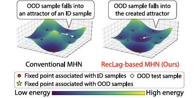 |
Rectified Lagrangian for Out-of-Distribution Detection in Modern Hopfield Networks. Ryo Moriai, Nakamasa Inoue, Masayuki Tanaka, Rei Kawakami, Satoshi Ikehata, Ikuro Sato. In proceedings of Annual AAAI Conference on Artificial Intelligence (AAAI, accepted as an oral presentation), 2025. |
||||||||||||||||||||||||||||||||||||||||||
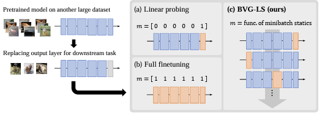 |
A simple finetuning strategy based on bias-variance ratios of layer-wise gradients. Mao Tomita, Ikuro Sato, Rei Kawakami, Nakamasa Inoue, Satoshi Ikehata, Masayuki Tanaka, Rei Kawakami, Satoshi Ikehata, Ikuro Sato. In proceedings of Asian Conference on Computer Vision (ACCV), 2024 (accepted as an oral presentation). |
||||||||||||||||||||||||||||||||||||||||||
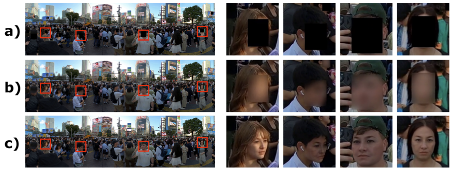 |
Investigating the Perception of Facial Anonymization Techniques in 360° Videos Leslie Wöhler, Satoshi Ikehata, Kiyoharu Aizawa. ACM Transactions on Applied Perception, Volume 21, Issue 4, 2024. |
||||||||||||||||||||||||||||||||||||||||||
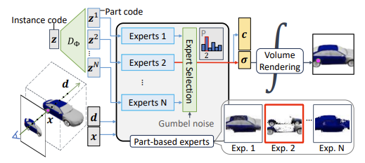 |
Gumble-NeRF: Representing Unseen Objects as Part-compositional Neural Radiance Feilds. Yusuke Sekikawa, Chingwei Hsu, Satoshi Ikehata, Rei Kawakami, Ikuro Sato. In proceedings of International Conference on Image Processing (ICIP), 2024. |
||||||||||||||||||||||||||||||||||||||||||
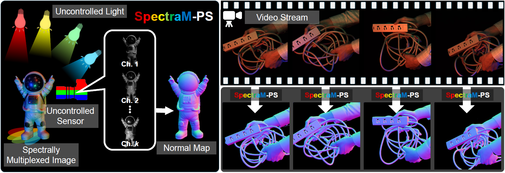 |
Physics-Free Spectrally Multiplexed Photometric Stereo under Unknown Spectral Composition. Satoshi Ikehata, Yuta Asano. In proceedings of European Conference on Computer Vision (ECCV), 2024 (accepted as an oral presentation). |
||||||||||||||||||||||||||||||||||||||||||
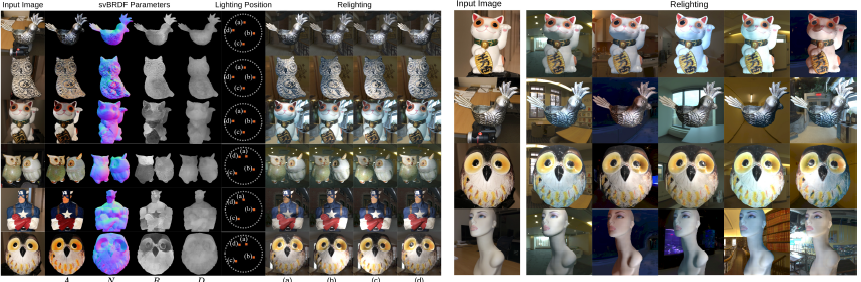 |
Towards Single-Shot Photometric Stereo through Material Estimation and Relighting. Ashish Tiwari , Satoshi Ikehata, Shanmuganathan Raman. In proceedings of European Conference on Computer Vision (ECCV), 2024. |
||||||||||||||||||||||||||||||||||||||||||
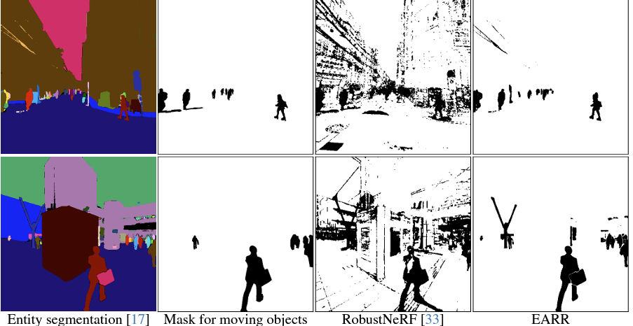 |
Entity-NeRF: Detecting and Removing Moving Entities in Urban Scenes. Takashi Otonari, Satoshi Ikehata, Kiyoharu Aizawa. In proceedings of CVF/IEEE Computer Vision and Pattern Recognition (CVPR), 2024 (paper (arxiv), website). |
||||||||||||||||||||||||||||||||||||||||||
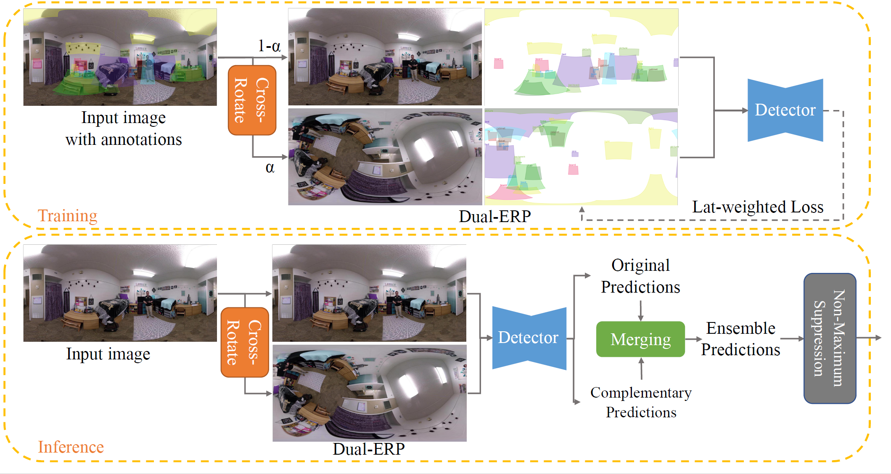 |
Field-of-View IoU for Object Detection in 360° Images. Miao Cao, Satoshi Ikehata, Kiyoharu Aizawa. IEEE Transactions on Image Procession (TIP), 2023 (paper). |
||||||||||||||||||||||||||||||||||||||||||
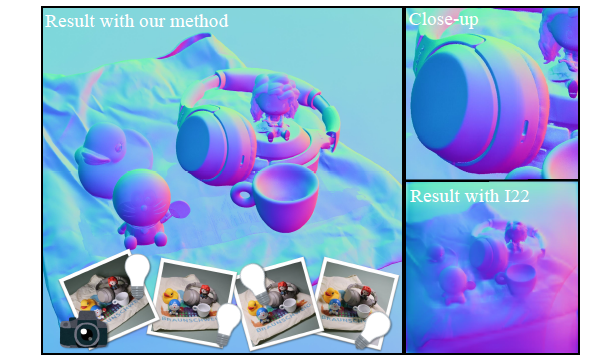 |
Scalable, Detailed and Mask-free Universal Photometric Stereo Satoshi Ikehata. In proceedings of CVF/IEEE Computer Vision and Pattern Recognition (CVPR), 2023. (accepted as a highlight paper, 2.5%) (paper (arxiv), code (github)) 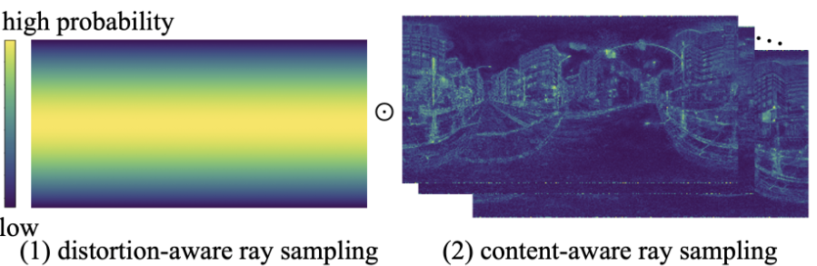 Non-uniform Sampling Strategies for NeRF on 360 images | Takashi Otonari, Satoshi Ikehata, Kiyoharu Aizawa. In proceedings of British Machine Vision Conference (BMVC), 2022. 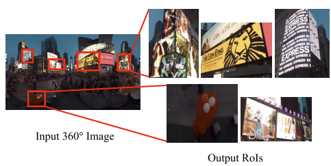 Saliency-Based Multiple Region of Interest Detection From a Single 360° Image | Yuki Sawabe, Satoshi Ikehata, Kiyoharu Aizawa. In IEEE Access, vol. 10, pp. 89124-89133, 2022. 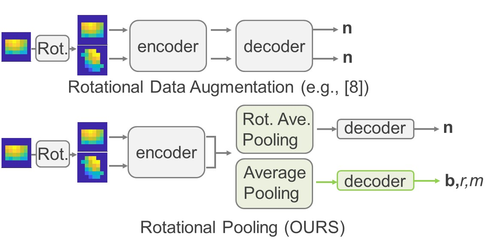 Does Physical Interpretability of Observation Map Improve the Photometric Stereo Network? |
Satoshi Ikehata. In proceedings of IEEE International Conference on Image Processing (ICIP), 2022. (paper) |
Dual-ERP representation for Object Detection in 360 degree images. |
Miao Cao, Satoshi Ikehata, Kiyoharu Aizawa. In proceedings of IEEE International Conference on Image Processing (ICIP), 2022. 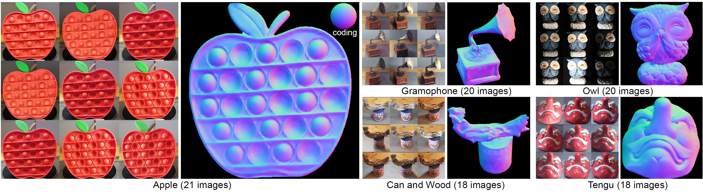 Universal Photometric Stereo Network using Global Lighting Contexts. |
Satoshi Ikehata. In proceedings of CVF/IEEE Computer Vision and Pattern Recognition (CVPR), 2022 (project site). 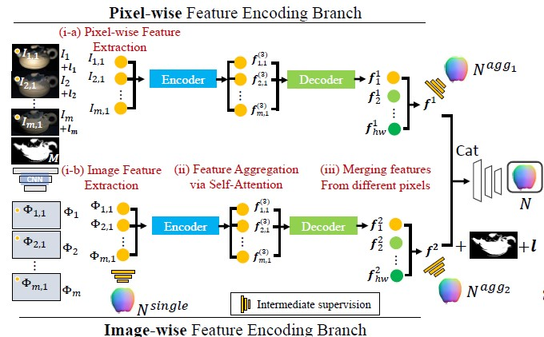 PS-Transformer: Learning Sparse Photometric Stereo Network using Self-Attention Mechanism. |
Satoshi Ikehata. In proceedings of British Machine Vision Conference (BMVC), 2021 (paper, github). 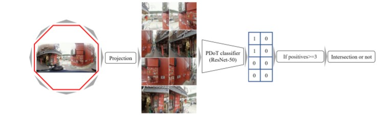 Intersection Prediction from Single 360° Image via Deep Detection of Possible Direction of Travel. |
Naoki Sugimoto, Satoshi Ikehata and Kiyoharu Aizawa. In proceedings of British Machine Vision Conference (BMVC), 2021 (paper). 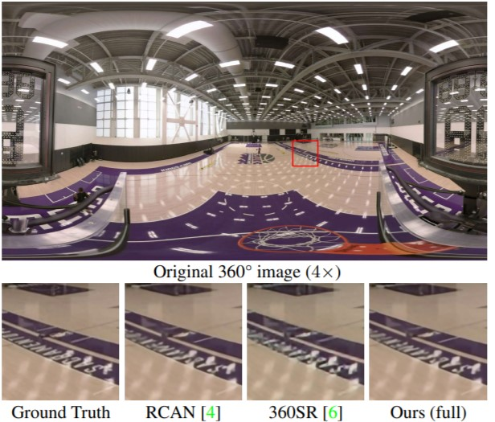 360° Single Image Super Resolution via Distortion-Aware Network and Distorted Perspective Images. |
Akito Nishiyama, Satoshi Ikehata, Kiyoharu Aizawa. In proceedings of International Conference on Image Processing (ICIP), 2021 (paper). 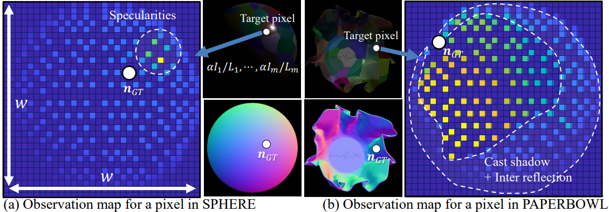 CNN-PS: CNN-based Photometricc Stereo for General Non-Convex Surfaces. |
Satoshi Ikehata. In proceedings of European Conference on Computer Vision (ECCV), 2018 (paper, supplementary, codes (github)). 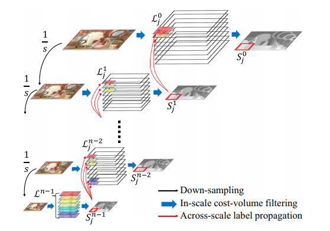 Efficiency-enhanced cost-volume filtering featuring coarse-to-fine strategy. |
Ryosuke Furuta, Satoshi Ikehata, Toshihiko Yamaskai, Kiyoharu Aizawa. Multimedia Tools Appl. 77(10): 12469-12491, 2018 (paper). 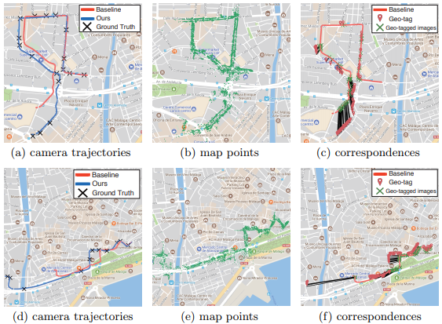 Scale Drift Correction of Camera Geo-Localization using Geo-Tagged Images |
Kazuya Iwami, Satoshi Ikehata, Kiyoharu Aizawa. 6th Workshop on Computer Vision for Road Scene Understanding and Autonomous Driving (ECCV2018 Workshop), 2018 (preprint). 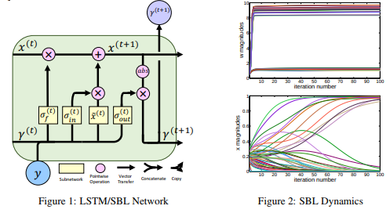 From Bayesian Sparsity to Gated Recurrent Nets |
Hao He, Bo Xin, Satoshi Ikehata, David P. Wipf. In proceedings of Neural Information Processing Systems（NIPS）, 2017 (accepted as an oral presentation, 1.20%): 5560-5570, 2017 (NIPS proceedings). 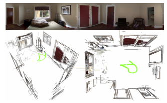 Panoramic Structure from Motion via Geometric Relationship Detection |
Satoshi Ikehata, Ivaylo Boyadzhiev, Qi Shan, Yasutaka Furukawa. CoRR abs/1612.01256, 2016 (arXiv paper). 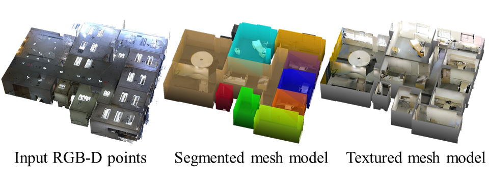 Structured Indoor Modeling |
Satoshi Ikehata, Hang Yan and Yasutaka Furukawa. In proceedings of IEEE International Conference on Computer Vision (ICCV), 2015 (accepted as an oral presentation, 3.30%) (project page). 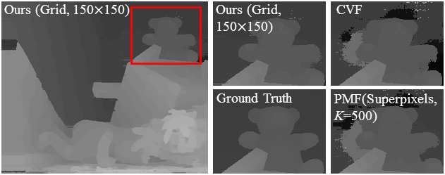 Coarse-to-Fine Strategy for Efficient Cost-Volume Filtering |
Ryosuke Furuta, Satoshi Ikehata, Toshihiko Yamasaki and Kiyoharu Aizawa. In proceedings of IEEE International Conference on Image Procession(ICIP), 2014 (paper). 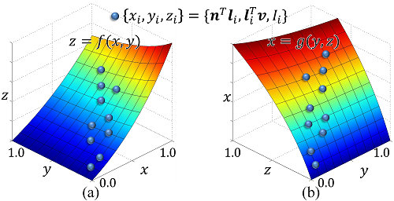 Photometric Stereo using Constrained Bivariate Regression for General Isotropic Surfaces |
Satoshi Ikehata and Kiyoharu Aizawa. In proceedings of Computer Vision and Pattern Recognition (CVPR), 2014 (accepted as an oral presentation, 5.76%) (paper, supplementary, source codes). 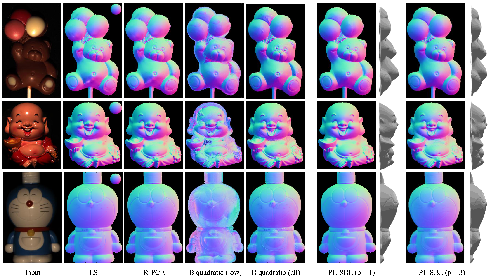 Photometric Stereo using Sparse Bayesian Regression for General Diffuse Surfaces |
Satoshi Ikehata, David Wipf, Yasuyuki Matsushita and Kiyoharu Aizawa. IEEE Transactions on Pattern Analysis and Machine Intelligence (TPAMI), 2014 (source codes). 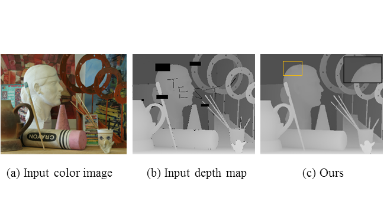 Depth Map Inpainting and Super-Resolution based on Internal Statistics of Geometry and Appearance |
Satoshi Ikehata, Ji-Ho Cho and Kiyoharu Aizawa. In proceedings of IEEE International Conference on Image Procession(ICIP), 2013, (pdf). 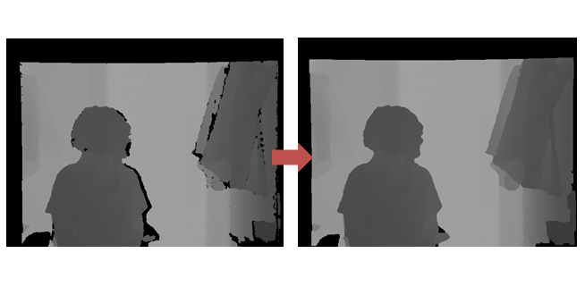 Depth Map Upsampling using Cost-Volume Filtering |
Ji-Ho Cho, Satoshi Ikehata, Hyunjin Yoo, Margrit Gelautz and Kiyoharu Aizawa. In proceedings of 11th IEEE IVMSP Workshop: 3D Image/Video Technologies and Applications, 2013, (pdf). 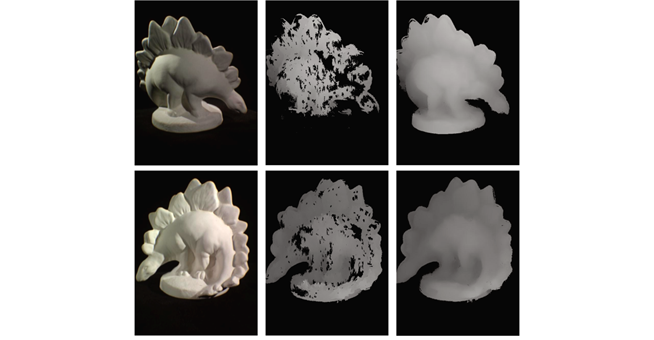 Confidence-based Refinement of Corrupted Depth Maps |
Satoshi Ikehata and Kiyoharu Aizawa. In proceedings of Signal & Information Processing Association Annual Summit and Conference (APSIPA ASC), 2012, (pdf). 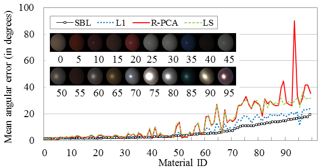 Robust Photometric Stereo using Sparse Regression |
Satoshi Ikehata, David Wipf, Yasuyuki Matsushita, and Kiyoharu Aizawa. In proceedings of Computer Vision and Pattern Recognition (CVPR), 2012, (pdf, supplementary, codes). |